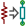
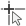

Manuel de référence
Copyright
Ce document est la propriété des contributeurs ci-dessous, copyright © 2010-2016. Vous pouvez le distribuer et/ou le modifier selon les termes de la GNU General Public License (http://www.gnu.org/licenses/gpl.html), version 3 ou ultérieure ou bien selon la licence Creative Commons Attribution (http://creativecommons.org/licenses/by/3.0/), version 3.0 ou ultérieure.
Toutes les marques apparaissant dans ce document appartiennent à leurs propriétaires respectifs.
Contributeurs
Jean-Pierre Charras, Fabrizio Tappero, Wayne Stambaugh, Marc Berlioux.
Traduction
Marc Berlioux <marc.berlioux@gmail.com>, 2015-2016
Retours
Merci de signaler vos corrections de bugs, suggestions ou nouvelles versions ici :
-
Documentation de KiCad : https://github.com/KiCad/kicad-doc/issues
-
Bugs logiciel KiCad : https://bugs.launchpad.net/kicad
-
Traductions de KiCad : https://github.com/KiCad/kicad-i18n/issues
Date de publication et version du logiciel
Publié le 22 mai 2015.
1. Introduction à CvPcb
CvPcb est un outil qui permet d’associer les composants de votre schéma aux empreintes de composants utilisées pour le dessin du circuit imprimé. Cette association sera ajoutée au fichier netliste créé par le programme de saisie schématique Eeschema.
Le fichier netliste, généré par Eeschema, spécifie quelle empreinte du circuit imprimé sera associée à chaque composant du schéma seulement si le champ Footprint (empreinte) du composant est initialisé.
C’est le cas lorsque les empreintes de composants sont associées pendant la saisie du schéma, en fixant le champ Footprint du composant, ou qu’il il est déjà fixé dans la librairie schématique lors du chargement du symbole.
CvPcb fournit une méthode pratique pour associer des empreintes aux composants lors de la capture schématique. Il permet le filtrage de la liste d’empreintes, la visualisation de l’empreinte et de son modèle 3D pour aider à s’assurer que la bonne empreinte sera associée à chaque composant.
Les composants peuvent être associés à leurs empreintes correspondantes manuellement, ou automatiquement, en créant des fichiers d'équivalences (fichiers .EQU). Ces fichiers d'équivalences sont des tables associant chaque composant à son empreinte.
Cette approche interactive est plus simple et moins sujette à erreurs que d’associer directement les empreintes dans l'éditeur de schémas.
CvPcb vous permet de voir la liste des empreintes disponibles, et de les afficher à l'écran, pour vous assurer que vous associez la bonne empreinte.
CvPcb ne peut être lancé qu'à partir de Eeschema, par la barre d’outils supérieure, soit lorsque Eeschema est démarré à partir du gestionnaire de projet KiCad, soit lorsque Eeschema est lancé comme une application indépendante.
Lancer CvPcb depuis Eeschema lui-même lancé par le gestionnaire de projet KiCad est en général préférable car :
-
Cvpcb a besoin du fichier de configuration du projet pour savoir quelles librairies d’empreintes charger.
-
Cvpcb initialise le champ "empreinte" des composants du schéma courant. Ce n’est possible que si le fichier de projet est dans le même chemin que le schéma ouvert.
Lancer CvPcb depuis Eeschema, lui-même lancé depuis le gestionnaire KiCad assure automatiquement toutes ces opérations.
|
Attention
|
Vous pouvez quand même lancer CvPcb depuis une session de Eeschema indépendante, mais veuillez noter qu’un schéma ouvert ne possédant pas un fichier de projet dans le même chemin, pourrait manquer de certains composants à cause des librairies manquantes qui n’apparaîtront pas dans CvPcb. S’il n’y a pas de fichier fp-lib-table dans le même chemin que le schéma ouvert, aucune librairie d’empreintes spécifique au projet ne sera disponible non plus. |
2. Fonctionnalités de CvPcb
2.1. Association automatique ou manuelle
CvPcb vous permet une association interactive (manuelle), ou automatique, par le moyen des fichiers d'équivalences.
3. Invocation de CvPcb
CvPcb ne peut être lancé que depuis le programme de saisie schématique Eeschema, au moyen du bouton :

Eeschema passe automatiquement les données correctes (liste des composants et d’empreintes) à CvPcb. Il n’y a aucune mise à jour à faire (à moins que certains nouveaux composants ne soient pas encore annotés), il suffit de lancer CvPcb.
4. Commandes de CvPcb
4.1. Fenêtre principale
L’image ci-dessous montre la fenêtre principale de CvPcb.

Le volet de gauche contient la liste des noms des fichiers des librairies d’empreintes disponibles associées au projet. Le volet central contient la liste des composants, chargée à partir du fichier netliste. Le volet de droite contient la liste des empreintes disponibles chargée depuis les librairies d’empreintes du projet. Le volet composant sera vide si aucun fichier netliste n’a été chargé et le volet des empreintes peut aussi être vide si aucune librairie d’empreintes n’a été trouvée.
4.2. Barre d’outils principale

La barre d’outils supérieure permet l’accès rapide aux commandes suivantes :
|
Transfère l’association courante des empreintes à Eeschema (dans le contenu des champs empreintes (footprint)). |
|
Invoque le menu de configuration de CvPcb. |
|
Affiche l’empreinte du composant sélectionné dans la fenêtre d’empreinte. |
|
Sélectionne automatiquement le composant précédent de la liste n’ayant pas d’empreinte associée. |
|
Sélectionne automatiquement le composant suivant de la liste n’ayant pas d’empreinte associée. |
 |
Associe automatiquement des empreintes aux composants en utilisant un fichier d'équivalences. |
|
Supprime toutes les associations d’empreintes. |
|
Ouvre le fichier de documentation PDF de l’empreinte sélectionnée dans le visualisateur par défaut. |
|
Active ou désactive le filtre des empreintes les limitant à celles proposées dans le composant sélectionné. |
|
Active ou désactive le filtre des empreintes les limitant à celles ayant le même nombre de pins. |
|
Active ou désactive le filtrage des empreintes, les limitant à celles faisant partie de la librairie sélectionnée. |
4.3. Principales commandes au clavier
La liste des commandes au clavier de la fenêtre principale :
Flèche Droite / Tabulation |
Active le panneau suivant à droite. Revient au début quand la fin est atteinte. |
Flèche Gauche |
Active le panneau suivant à gauche. Revient à la fin quand le début est atteint. |
Flèche Haut |
Sélectionne l'élément précédent dans la liste courante sélectionnée. |
Flèche Bas |
Sélectionne l'élément suivant dans la liste courante sélectionnée. |
Page Haut |
Monte d’une page dans la liste d'éléments courante sélectionnée. |
Page Bas |
Descend d’une page dans la liste d'éléments courante sélectionnée. |
Home |
Sélectionne le premier élément de la liste courante sélectionnée. |
Fin / End |
Sélectionne le dernier élément de la liste courante sélectionnée. |
4.4. Configuration de CvPcb

CvPcb peut être automatiquement fermé après l’enregistrement du fichier d’association des empreintes, ou non.
Par le menu «Préférences», «Librairies d’Empreintes», on affiche la fenêtre de configuration des librairies.
Suivant la version de CvPcb, il y a 2 méthodes différentes de gestion de librairies :
-
La méthode héritée des versions précédentes, utilisant des fichiers librairies * .mod, et une liste de fichiers librairies.
-
Le nouveau format «Pretty» : Il utilise une liste de noms de dossiers. Chaque dossier (dossiers *. pretty) est une librairie contenant les fichiers d’empreintes, un fichier par empreinte. Avec cette nouvelle méthode de gestion de librairies, vous pouvez également utiliser les librairies natives, provenant de GEDA/GPCB, ou même des fichiers Eagle au format XML.
5. Gestion des Librairies d’Empreintes
5.1. Important :
Cette section ne concerne que les versions depuis Décembre 2013
5.2. Tables des librairies d’empreintes
Depuis décembre 2013, PcbNew et CvPcb utilisent un nouvel outil de gestion des librairies, basé sur des tables de librairies d’empreintes, qui permet l’utilisation directe des librairies d’empreintes suivantes :
-
Anciennes librairies KiCad (fichiers .mod), héritées des versions précédentes
-
Nouvelles librairies KiCad .pretty depuis un disque local (dossiers avec l’extension .pretty contenant des fichiers .kicad_mod)
-
Nouvelles librairies KiCad .pretty depuis le réseau (serveur GitHub de KiCad, ou autre serveur GitHub)
-
Librairies GEDA (dossiers contenant des fichiers .fp)
-
Librairies d’empreintes de Eagle
|
Note
|
|
L’image ci-dessous montre la fenêtre d'édition de la table des librairies d’empreintes, qui s’ouvre par le menu «Préférences», «Librairies d’Empreintes».

La table des librairies d’empreintes est utilisée pour attribuer un pseudonyme à chaque librairie d’empreintes, de chaque type supporté. Ce pseudo sera utilisé pour rechercher des empreintes, en remplacement de la méthode précédente, qui ordonnait les librairies par leur chemin.
Ceci permet à CvPcb d’accéder à des empreintes ayant le même nom dans différentes librairies, en s’assurant que ce soit l’empreinte correcte qui est chargée à partir de la librairie appropriée. Il permet également à CVPCB d’utiliser des librairies provenant d’autres logiciels de PCB tels que Eagle ou GEDA.
5.2.1. Table des Librairies Globales
La table des librairies globales d’empreintes contient la liste des librairies qui sont toujours disponibles, quel que soit le fichier de projet actuellement chargé. La table est enregistrée dans un fichier fp-lib-table dans le dossier personnel de l’utilisateur. L’emplacement de ce dossier dépend du système d’exploitation utilisé.
5.2.2. Table des Librairies Spécifiques au Projet
La table des librairies spécifiques au projet contient la liste des librairies d’empreintes qui sont disponibles spécifiquement pour le projet actuellement chargé. Cette table ne peut être modifiée que quand elle est chargée en même temps que le fichier netliste du projet. Si aucun fichier de projet n’est chargé, ou s’il n’y a pas de fichier de table de librairies d’empreintes dans le dossier du projet, une table vide sera créée, et pourra être éditée et enregistrée plus tard, avec le fichier d’affectation des empreintes.
5.2.3. Configuration Initiale
Quand PcbNew ou CvPcb sont lancés pour la première fois, et que le fichier table des librairies d’empreintes globales fp-lib-table n’a pas été trouvé dans le dossier personnel de l’utilisateur, ils tenteront de copier le fichier fp-lib-table par défaut, du dossier système KiCad / template dans le dossier personnel de l’utilisateur.
Si le fichier fp-lib-table ne peut être trouvé, une table de librairies d’empreintes vide sera créée dans le dossier personnel de l’utilisateur. Dans ce cas, l’utilisateur pourra copier fp-lib-table manuellement, ou configurer la table à la main.
La table des librairies d’empreintes par défaut inclut beaucoup de librairies d’empreintes standards, qui sont installées en même temps que KiCad.
Évidemment, la première chose à faire est de modifier cette table (ajouter/supprimer des entrées), suivant vos travaux et les librairies dont vous aurez besoin dans vos projets.
(Charger trop de librairies fait perdre du temps)
5.2.4. Ajouter des Entrées dans la Table
Pour utiliser une librairie d’empreintes, elle doit d’abord être ajoutée à l’une ou l’autre des tables, globale ou spécifique au projet. La table spécifique au projet est utilisable uniquement lorsque vous avez un fichier netliste ouvert.
Chaque entrée de la table doit avoir un pseudo unique.
Ce pseudo n’a pas besoin d'être lié au nom réel du fichier ou au chemin de la librairie. Le caractère : ne peut pas être utilisé dans le pseudo. Chaque entrée de librairie doit avoir un chemin d’accès et/ou un nom de fichier valides, suivant le type de librairie. Les chemins peuvent être définis comme absolus, relatifs, ou par la substitution d’une variable d’environnement (voir section ci-dessous).
Le plugin approprié doit être sélectionné pour que la librairie soit lue correctement. KiCad prend actuellement en charge en lecture les librairies d’empreintes : anciennes KiCad, nouvelles KiCad Pretty, Eagle, et GEDA.
Il y a aussi un champ description pour ajouter une description de l’entrée de librairie. Le champ option n’est pas utilisé pour l’instant, donc les options ajoutées n’auront aucun effet lors du chargement des librairies.
Veuillez noter que vous ne pouvez pas avoir des pseudos de librairies en double dans la même table. Cependant, vous pouvez avoir des surnoms de librairies en double dans les deux tables globale et spécifique au projet. L’entrée d’une table spécifique au projet aura préséance sur celle de la table globale dans le cas de noms dupliqués. Lorsque des entrées sont définies dans la table spécifique au projet, un fichier fp-lib-table contenant les entrées sera écrit dans le dossier du fichier netliste actuellement ouvert.
5.2.5. Substitution d’une Variable d’Environnement
Une des fonctionnalités les plus puissantes de la table des librairies d’empreintes est la substitution de variables d’environnement. Ceci permet d’avoir des chemins personnalisés dans des variables d’environnement, pour définir où vos librairies sont stockées. La substitution de variables d’environnement est supportée en utilisant la syntaxe ${ENV_VAR_NAME} dans le chemin de la librairie d’empreintes.
Par défaut, au lancement, KiCad définit deux variables d’environnement :
-
La variable d’environnement KIPRJMOD. Celle-ci pointe toujours sur le dossier du projet actuel et ne peut être modifiée.
-
La variable d’environnement KISYSMOD. Celle-ci pointe vers le dossier où ont été installées les librairies fournies avec KiCad.
Vous pouvez redéfinir KISYSMOD dans le menu Préférences / Configurer les Chemins, ce qui vous permet de remplacer les librairies d’empreintes par défaut de KiCad par vos propres librairies.
Quand un fichier netliste est chargé, CvPcb définit KIPRJMOD en utilisant le chemin du fichier (le chemin du projet).
Pcbnew définit également cette variable d’environnement lors du chargement d’un fichier de circuit.
Cela vous permet de stocker des librairies dans le dossier du projet, sans avoir à définir leur chemin absolu (qui n’est pas toujours connu) dans la table des librairies spécifiques au projet.
5.2.6. Utilisation du Plugin GitHub
Le plugin GitHub est un plugin spécial, qui fournit un interface d’accès en lecture seule à un dépôt GitHub distant, constitué de librairies d’empreintes au format Pretty (le nom du format de fichier d’empreinte de KiCad) et fournit accessoirement un support «Copy On Write» (COW) permettant d'éditer des empreintes lues à partir du dépôt GitHub, et de les enregistrer localement. Par conséquent, le «plugin GitHub» est pour l’accès à distance et en lecture seule des librairies d’empreintes au format pretty depuis https://github.com. Pour ajouter une entrée GitHub à la table des librairies d’empreintes, le champ «Chemin Librairie» de l’entrée dans la table doit pointer vers une URL GitHub valide.
Par exemple :
ou
Typiquement, les URL GitHub ont cette forme :
Le «Type de Plugin» doit être réglé sur «Github». Pour activer le «Copy On Write», une option allow_pretty_writing_to_this_dir doit être ajoutée dans le champ «Options» de l’entrée. Cette option donne le «Chemin de Librairie» pour le stockage local des empreintes modifiées, lues depuis le dépôt GitHub. Les empreintes enregistrées dans ce chemin sont combinées avec la partie en lecture seule du dépôt GitHub pour créer la librairie d’empreinte. Si cette option est manquante, alors la librairie GitHub est en lecture uniquement. Si l’option est présente pour une librairie GitHub, alors toute écriture vers cette librairie hybride se fera dans le répertoire local. Notez que la partie résidant sur github.com de cette librairie COW hybride est toujours en lecture seule, ce qui signifie que vous ne pouvez pas modifier ou supprimer quelque empreinte que ce soit directement dans le dépôt GitHub. Le type de ces librairies hybrides restera «GitHub» dans les paragraphes à venir, mais il se compose à la fois de la portion locale en lecture/écriture et de la portion distante en lecture seule.
Le tableau ci-dessous montre une entrée de table de librairies d’empreintes sans option allow_pretty_writing_to_this_dir :
| Pseudo nom | Chemin Librairie | Type de Plugin | Options | Descript. |
|---|---|---|---|---|
github |
Github |
Empreintes Liftoff’s GH |
Le tableau ci-dessous montre une entrée de table de librairies d’empreintes avec une option COW. Notez, pour exemple seulement, l’utilisation de la variable d’environnement ${HOME}. Le dossier github.pretty est situé dans le chemin ${HOME}/pretty/. Chaque fois que vous utilisez l’option allow_pretty_writing_to_this_dir, vous devez créer ce dossier manuellement au préalable, et il doit se terminer par l’extension .pretty.
| Pseudo nom | Chemin Librairie | Type de Plugin | Options | Descript. |
|---|---|---|---|---|
github |
Github |
allow_pretty_writing_to_this_dir= ${HOME}/pretty/github.pretty |
Empreintes Liftoff’s GH |
Le chargement des empreintes donnera toujours la priorité aux empreintes locales trouvées dans le chemin donné par l’option allow_pretty_writing_to_this_dir. Une fois que vous avez enregistré une empreinte dans le dossier local de la librairie COW avec l'éditeur de l’empreinte, aucune empreinte GitHub mise à jour ne sera visible lorsque vous chargerez une empreinte avec le même nom qu’une empreinte enregistrée localement.
Ayez toujours un dossier local *.pretty distinct pour chaque librairie GitHub, et ne les combinez jamais en vous référant plus d’une fois au même dossier.
Également, n’utilisez pas le même dossier COW (*.pretty) dans une entrée de table de librairies d’empreintes. Ça pourrait foutre le bordel.
La valeur de l’option allow_pretty_writing_to_this_dir substituera toute variable d’environnement utilisant la notation ${} pour désigner le chemin, de la même façon que pour le champ «Chemin Librairie».
Quelle est la finalité du système COW ? Il est là pour booster le partage des empreintes.
Si vous envoyez périodiquement vos modifications d’empreintes pretty COW au mainteneur du dépôt GitHub, vous aiderez à mettre à jour la copie GitHub. Envoyez simplement les fichiers individuels .kicad_mod que vous aurez dans vos dossiers COW au mainteneur du dépôt GitHub. Une fois que vous aurez reçu la confirmation que vos modifications ont été validées, vous pourrez supprimer en toute sécurité vos fichiers COW, et l’empreinte mise à jour de la librairie GitHub la remplacera. Votre objectif doit être de garder le dossier COW local aussi petit que possible en contribuant souvent aux copies maîtresses partagées sur https://github.com.
5.2.7. Scénarios d’Utilisation
Les librairies d’empreintes peuvent être définies comme globales, ou spécifiques au projet courant. Les librairies d’empreintes définies dans la table globale de l’utilisateur sont toujours disponibles, et sont décrites dans le fichier fp-lib-table du dossier personnel de l’utilisateur.
Les librairies d’empreintes globales sont toujours accessibles, même s’il n’y a pas de fichier netliste ouvert.
La table des librairies spécifiques au projet n’est active que pour le fichier netliste courant ouvert.
La table des librairies spécifiques au projet est enregistrée dans le fichier fp-lib-table, dans le chemin du fichier netliste actuellement ouvert. Vous êtes libres de définir des librairies dans chaque table.
Chaque méthode présente des avantages et des inconvénients. Vous pouvez définir toutes vos librairies dans la table globale, ce qui signifie qu’elles seront toujours disponibles quand vous en aurez besoin. L’inconvénient, c’est que vous devrez parfois parcourir beaucoup de librairies pour trouver l’empreinte que vous cherchez. Vous pouvez aussi définir toutes vos librairies sur une base spécifique par projet.
L’avantage, c’est que vous aurez uniquement à définir les librairies nécessaires pour le projet, ce qui réduit la recherche.
L’inconvénient c’est que vous devrez toujours vous rappeler d’ajouter chaque librairie d’empreintes dont vous avez besoin, pour chaque projet. Vous pouvez aussi définir à la fois des librairies d’empreintes globales, et des librairies spécifiques au projet.
Un autre scénario d’utilisation est de définir vos librairies les plus couramment utilisées de façon globale et les librairies seulement nécessaires pour le projet courant dans la table des librairies spécifiques. Il n’y a aucune restriction à la façon dont vous définissez vos librairies.
5.3. Utilisation de l’Assistant des Librairies d’Empreintes
Un assistant pour ajouter des librairies d’empreintes aux tables est disponible depuis la fenêtre d'édition des tables de librairies d’empreintes.
Notez également que les librairies d’empreintes peuvent être de n’importe quel type pris en charge par KiCad.
Il peut ajouter des librairies «locales», ou des librairies provenant d’un dépôt GitHub.
Quand des librairies sont sur un dépôt GitHub, elle peuvent être ajoutées comme des librairies distantes, ou téléchargées et ajoutées comme des librairies locales.
Ici, l’option librairie locale est cochée :

Ici, l’option librairie distante est cochée :

Suivant l’option choisie, une des pages suivantes sera affichée, pour sélectionner une liste de librairies.
Ici, quand l’option librairie locale a été choisie :

Ici, quand l’option librairie distante a été choisie :

Après avoir sélectionné un jeu de librairies, la page suivante permet de valider son choix :

Si certaines des librairies sélectionnées sont incorrectes (non prises en charge, pas des librairies d’empreintes, etc..), elles seront marquées comme «INVALIDES».
Le dernier choix est celui de la table à peupler :
-
la table globale
-
la table locale, spécifique au projet

6. Visualiser l’Empreinte Courante
6.1. L’outil de visualisation d’empreintes
L’outil de visualisation d’empreintes affiche l’empreinte courante sélectionnée. Un modèle 3D peut également être affiché s’il a été créé et assigné à l’empreinte. Ci-dessous la fenêtre du visualisateur d’empreinte.

6.1.1. Informations de la Barre d'État
La barre d'état se trouve au bas de la fenêtre principale de CvPcb et fournit des informations utiles à l’utilisateur. Le tableau suivant définit le contenu de chaque volet dans la barre d'état.
Left |
Component count: total, unassigned |
Middle |
Filter list of the selected component |
Right |
Filtering mode and count of available footprints |
6.1.2. Commandes au Clavier
F1 |
Zoom Avant |
F2 |
Zoom Arrière |
F3 |
Rafraîchit l'écran |
F4 |
Centre la vue sur le curseur de la souris |
Home |
Zoom automatique |
Barre d’Espace |
Place l’origine des coordonnées relatives à la position du curseur |
Flèche Droite |
Déplace le curseur d’une position de grille vers la droite |
Flèche Gauche |
Déplace le curseur d’une position de grille vers la gauche |
Flèche Haut |
Déplace le curseur d’une position de grille vers le haut |
Flèche Bas |
Déplace le curseur d’une position de grille vers le bas |
6.1.3. Commandes à la Souris
Molette |
Zoom Avant-Arrière à la position du curseur |
Ctrl + Molette |
Déplacement Droite-Gauche |
Shift + Molette |
Déplacement Haut-Bas |
Clic Droit |
Ouvre le menu contextuel |
6.1.4. Menu Contextuel
S’affiche d’un clic droit sur la souris :

Sélection Zoom |
Sélection directe du facteur de zoom. |
Sélection Grille |
Sélection directe de la taille de grille. |
6.1.5. Barre d’Outils Horizontale
|
Affiche la fenêtre des options d’affichage |
|
Zoom Avant |
|
Zoom Arrière |
|
Rafraîchit l'écran |
|
Zoom automatique |
|
Ouvre le visualisateur 3D |
6.1.6. Barre d’Outils Verticale
|
Affiche/Cache la grille |
|
Affiche les coordonnées en notation polaire ou rectangulaire |
|
Affiche les coordonnées en inches |
|
Affiche les coordonnées en millimètres |
 |
Change le style du pointeur |
|
Change le mode d’affichage des pastilles, contour ou normal |
|
Change le mode d’affichage des textes, contour ou normal |
|
Change le mode d’affichage des éléments graphiques, contour ou normal |
6.2. Visualisation du Modèle 3D Courant

6.2.1. Commandes à la Souris
Molette |
Zoom Avant-Arrière à la position du curseur |
Ctrl + Molette |
Déplacement Droite-Gauche |
Shift + Molette |
Déplacement Haut-Bas |
6.2.2. Barre d’Outils Horizontale
|
Recharge le modèle 3D |
|
Copie l’image 3D dans le presse-papier |
|
Affiche la fenêtre des options d’affichage 3D |
|
Zoom Avant |
|
Zoom Arrière |
|
Rafraîchit l'écran |
|
Zoom automatique |
|
Rotation sens horaire suivant axe X |
|
Rotation sens anti-horaire suivant axe X |
|
Rotation sens horaire suivant axe Y |
|
Rotation sens anti-horaire suivant axe Y |
|
Rotation sens horaire suivant axe Z |
|
Rotation sens anti-horaire suivant axe Z |
|
Déplace la vue vers la gauche |
|
Déplace la vue vers la droite |
|
Déplace la vue vers le haut |
|
Déplace la vue vers le bas |
|
Active/Désactive le mode projection orthographique |
7. Association Composants - Empreintes avec CvPcb
7.1. Association Manuelle
Pour associer manuellement une empreinte à un composant, sélectionnez d’abord un composant dans le volet composants. Puis, sélectionnez une empreinte dans le volet empreinte en double-cliquant du bouton gauche de la souris sur le nom de l’empreinte souhaitée. Le composant suivant non associé de la liste est automatiquement sélectionné. La modification de l’empreinte de ce composant sera effectuée de la même manière.
7.2. Filtrage de la Liste d’Empreintes
Si le composant sélectionné et/ou la librairie sont mis en évidence lorsqu’une ou plusieurs options de filtrage sont activées, la liste d’empreintes affichée dans CvPcb sera filtrée en conséquence.
Les icônes


 activent ou désactivent les
fonctions de filtrage. Quand aucun filtrage n’est activé, la liste complète
des empreintes est affichée.
activent ou désactivent les
fonctions de filtrage. Quand aucun filtrage n’est activé, la liste complète
des empreintes est affichée.
Sans filtrage :

Filtrage par la liste des filtres d’empreintes affectés au composant sélectionné. Les filtres de composants sont répertoriés dans le volet central de la barre d'état au bas de la fenêtre principale.
Filtrage par le filtre d’empreintes du composant sélectionné :

Dans l'éditeur de librairies de composants de Eeschema, la liste des empreintes a été ajoutée en utilisant les entrées de l’onglet Filtrage Modules de la fenêtre des propriétés du composant, comme montré ci-dessous.

Filtrage par le nombre de pins du composant sélectionné :

Filtrage par la librairie sélectionnée.

Les filtres peuvent être combinés pour un filtrage plus complexe afin de réduire le nombre d’empreintes dans le volet empreintes.
Filtrage par le nombre de pins du composant et par le filtre de modules du composant :

8. Association Automatique
8.1. Fichiers d'Équivalences
Les fichiers d'équivalences permettent l’association automatique d’empreintes aux composants.
Ils listent les noms des empreintes correspondant aux noms (champ valeur) des composants. Ces fichiers ont pour extension .equ.
Ce sont des fichiers de texte brut. Ils doivent être créés par l’utilisateur et peuvent être édités avec n’importe quel éditeur de texte.
8.2. Format des Fichiers d'Équivalences
Les fichiers d'équivalences sont constitués d’une ligne par composant. Chaque ligne a la structure suivante :
‘valeur du composant’ ‘nom empreinte’
Chaque nom doit être entouré de guillemets simples ('), et le nom du composant et de l’empreinte séparés par un ou plusieurs espaces.
Exemple :
Si le composant U3 est le circuit intégré 14011 et que son empreinte est 14DIP300, la ligne sera :
‘14011’ ‘14DIP300’
Chaque ligne débutant par # est un commentaire et sera ignorée.
Voici un exemple de fichier d'équivalences :
#integrated circuits (smd): '74LV14' 'SO14E' '74HCT541M' 'SO20L' 'EL7242C' 'SO8E' 'DS1302N' 'SO8E' 'XRC3064' 'VQFP44' 'LM324N' 'S014E' 'LT3430' 'SSOP17' 'LM358' 'SO8E' 'LTC1878' 'MSOP8' '24LC512I/SM' 'SO8E' 'LM2903M' 'SO8E' 'LT1129_SO8' 'SO8E' 'LT1129CS8-3.3' 'SO8E' 'LT1129CS8' 'SO8E' 'LM358M' 'SO8E' 'TL7702BID' 'SO8E' 'TL7702BCD' 'SO8E' 'U2270B' 'SO16E' #Xilinx 'XC3S400PQ208' 'PQFP208' 'XCR3128-VQ100' 'VQFP100' 'XCF08P' 'BGA48' #upro 'MCF5213-LQFP100' 'VQFP100' #regulators 'LP2985LV' 'SOT23-5'
8.3. Association Automatique d’Empreintes aux Composants
Cliquez sur le bouton d’association automatique dans la barre d’outils du haut pour traiter le fichier d'équivalences.
Tous les composants repérés par leur valeur dans le fichier d'équivalences auront leur empreinte automatiquement associée.